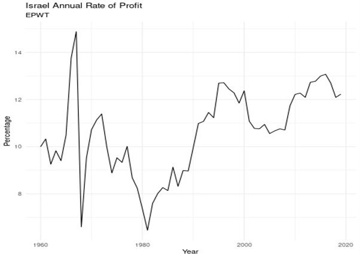

26 Israel
Roberts
Last March, Israel marked its 75th anniversary as a state. The Economist journal commented “Today Israel is hugely rich, safer than it has been for most of its history, and democratic—if, that is, you are prepared to exclude the territories it occupies (sic!). It has overcome wars, droughts and poverty with few natural endowments other than human grit. It is an outlier in the Middle East, a hub of innovation and a winner from globalisation.” These words now seem like a sick joke given the events of the last few weeks, or for that matter if we look at the real history of the Israeli state.
That history is one of Jewish immigrants coming to Palestine with the broad aim of setting up a ‘safe-haven’ state for Jews in their ‘homeland’ alongside the existing Arab inhabitants. Many of these Zionists dreamt of Israel as becoming a model ‘socialist society’, communally owned and run through local communes or kibbutzim acting, as an democratic alternative to the rule of sheikhs and generals in the Arab states. The reality was that in practice Jewish immigrants settling in Palestine and establishing a new ‘socialist’ state could only do so by the removal of hundreds of thousands of Arabs from their homes and land through violence.
Nevertheless, through a combination of massive immigration (which doubled the Jewish population), huge inputs of foreign investment by rich Jewish communities and mainly American capital, plus the setting-up of a strong military force, Israel’s economy grew very fast from 1948. This was the ‘golden age’ of post-war capitalism, when profit rates were high and investment was equally strong. So it was possible to inaugurate a new economy very fast. GNP grew at an average annual rate of 10.4 percent between 1948-1972. The capital needed to build the Israeli economy came from US aid transfers and loans, German reparation payments and the sale of Israeli state bonds abroad. Profitability was kept high by controlling prices and wages, so keeping workers’ real incomes from rising too much.
But then, as in the rest of advanced capitalist economies, the profitability of capital in Israel fell sharply from about the mid-1960s to the early 1980s. This brought economic crises as part of the international slump of 1974-5 and 1980-2. It also brought a new war with the Arab states in 1973. At this point in the story of the Israeli economy, it is very useful to look at the profitability of Israeli capital from the 1960s, as provided by the World Profitability Database.

The graph clearly shows the sharp fall in profitability to a low in the global slump of 1980-2. Between 1973 and 1985, GNP growth declined to about 2 percent per year, with no real increase in per capita output. At the same time, the inflation rate spiralled out of control, reaching a high of 445 percent in 1984 and the balance of payments deficit with the rest of the world hit highs.
Israel’s so-called democratic socialist state had to go if Israel’s capitalists were to prosper. And so, as in many other capitalist economies, Israelis now elected governments that aimed to end ‘socialism’ and open up the economy to capital without restrictions, while at the same time reducing Israel’s ‘welfare’ state and support for collectives like the kibbutz. Israel entered the neo-liberal era which lasted globally for the next two to three decades with a vengeance.
In 1983, the Tel Aviv Stock Exchange collapsed, bursting a huge financial bubble that had been growing for years. The right-wing Likud government blamed the banks. It took over Bank Hapoalim which had direct and indirect control over some 770 companies and controlled some 35 percent of the Israeli economy with the aim to privatise all these state assets. The state eventually sold the three major banks: Bank Hapoalim, Bank Leumi, and Bank Discount to private capitalists. The telecommunications industry was privatised and the ports are now going through the same process.
In a carbon copy policy of Reagan in the US and Thatcher in the UK, between 1986-2000, 83 government owned companies were sold for a total of $8.7 billion US dollars. The national airline ELAL, the telecommunications network Bezeq, all the major banks and the other big five conglomerates were all sold off to buyers selected by the government. The buyers included many of Israel’s wealthiest, combined with moneyed American Jewry, and other foreign conglomerates. None of these companies were privately listed for sale. For example, the government sold Israel Chemicals Ltd. to the Eisenberg family through a private bidding process that was carried out between 1993 and 1997.
For a while these measures did help to get the profitability of Israeli capital up – in our profitability graph, there was a doubling of the rate of profit from 1982 to 2000. But the rise in profitability was mainly driven by a new influx of immigrants after the collapse of the Soviet Union and from North Africa. Immigration cheapened labour costs, while a period of seeming ‘truce’ with the Arabs ensued after the Oslo accords enabling even greater inflows of foreign investment.
This was the period of the expansion of ‘start-up hi-tech’ firms that Israel has become noted for and of the apparent integration of the Israeli economy into a a fast-globalising world economy. Nicknamed the “Start‑Up Nation”, Israel now has more than 7,000 active start‑up companies.
But this did not last. In the 21st century, Israel’s capitalist economy increasingly struggled like many other ‘emerging economies’. The big difference, of course, that in its perpetual war with its neighbouring Arab states, Israel has been backed to the hilt by the US and Western capital. So even facing permanent conflict with its Arab neighbours and uprisings by the displaced Palestinians, it has been able to survive economically and also develop a formidable military force.
Ironically, massive immigration from the former Soviet Union, the importation of foreign workers and the rapid natural growth of the local Arab population, has made Israel less and less of a ‘Jewish state’ in population terms. But the impact of neoliberal policies and economic slowdown has not led to a shift to the left. The fear of Arab attacks and the failure of any effective alternative socialist opposition have instead led to the rise of religious and ethnic political parties. The race and religious cards have been played by Israeli capital to avoid any confrontation over its economic and social failures.
In the past ten years the collective Kibbutzim have rapidly disappeared to be replaced by high-end suburban housing. Land values have skyrocketed with real estate speculation. There has been continual erosion in funding for health and other public services which has led to a rise in the private cost of health and adds to growing gaps in the access to services between those who have money and those who don’t.
The ‘socialist dream’ of the early Israeli state has now given way to the capitalist reality. Israel is one of the most unequal high-income countries.
Roberts (2023) Israel: the shattering of a dream
Naila
“I’m personally a Holocaust survivor as an infant, I barely survived. My grandparents were killed in Aushwitz and most of my extended family were killed. I became a Zionist; this dream of the Jewish people resurrected in their historical homeland and the barbed wire of Aushwitz being replaced by the boundaries of a Jewish state with a powerful army…and then I found out that it wasn’t exactly like that, that in order to make this Jewish dream a reality we had to visit a nightmare on the local population.
There’s no way you could have ever created a Jewish state without oppressing and expelling the local population. Jewish Israeli historians have shown without a doubt that the expulsion of Palestinians was persistent, pervasive, cruel, murderous and with deliberate intent - that’s what’s called the ‘Nakba’ in Arabic; the ‘disaster’ or the ‘catastrophe’. There’s a law that you cannot deny the Holocaust, but in Israel you’re not allowed to mention the Nakba, even though it’s at the very basis of the foundation of Israel.
I visited the Occupied Territories (West Bank) during the first intifada. I cried every day for two weeks at what I saw; the brutality of the occupation, the petty harassment, the murderousness of it, the cutting down of Palestinian olive groves, the denial of water rights, the humiliations…and this went on, and now it’s much worse than it was then.
It’s the longest ethnic cleansing operation in the 20th and 21st century. I could land in Tel Aviv tomorrow and demand citizenship but my Palestinian friend in Vancouver, who was born in Jerusalem, can’t even visit!
So then you have these miserable people packed into this, horrible…people call it an ‘outdoor prison’, which is what it is. You don’t have to support Hamas policies to stand up for Palestinian rights, that’s a complete falsity. You think the worse thing you can say about Hamas, multiply it by a thousand times, and it still will not meet the Israeli repression and killing and dispossession of Palestinians.
And ‘anybody who criticises Israel is an anti-Semite’ is simply an egregious attempt to intimidate good non-Jews who are willing to stand up for what is true.”
Tooze
The extreme destruction begs the question of Gaza’s future. But this crisis also puts to the test the economic grand strategy that Israel has developed since the second intifada (2000-2005), a strategy of national security neoliberalism, closely associated with Benjamin Netanyahu, first as Ariel Sharon’s Finance Minister and then as Prime Minster.
Israel’s strategy followed from the collapse of the hopes associated in the 1990s with the promise of the peace economy. Shimon Peres and other Israeli strategists had hoped to combine a final settlement with the Palestinians with broader regional economic integration, along the lines of West European integration.
The outbreak of the Second Intifada in September 2000 turned the game upside down. The failure of the Camp David Summit in that year marked the end of the peace economy.
The intifada dealt a heavy blow to Israel’s economy. According to Central Bank estimates the Palestinian uprising was costing Israel as much as 3.8% of gdp per annum. The idea of a deeply integrated regional economy no longer seemed realistic. Even less so after 911 and the assault on Iraq in 2003. This put strain on Israel’s alignment with the United States, as Washington needed to find new allies in the Arab world and Israel’s right-wing no longer wanted to compromise on the road to a two-state solution.
The right-wing governments in the post-Intifada period faced a new dilemma: How to restore economic growth without a peace process? This dilemma was the origin of a new economic-security doctrine. In the early 2000s, the Israeli economy was in a recession … The government of Ariel Sharon, led by Finance Minister Benjamin Netanyahu, implemented an austerity policy. In April 2003, a month after his appointment as minister of finance, Netanyahu announced the Economic Recovery Plan, which included a budget cut, a lowering of government deficits, and severe reductions in social spending and allowances. He also reduced government subsidies to the private sector. For Netanyahu, private sector growth was a means to improve Israel’s economic power in a globalized world. … privatization and liberalization were processes designed to improve Israel’s capacity to withstand external political pressure and pursue an independent foreign policy. … By late 2003, Israel’s current account had become positive and was growing, indicating that foreign currency was pouring into the economy. This change, which went unnoticed by the Israeli public, was nothing less than a transformative moment, a revolution in Israel’s economic history. … Ben-Gurion’s doctrine assumed dependency on foreign capital. This dependency, I argue, was a key element in the national vision and identity: the dependence of the state-building project on foreign assistance. By becoming a “surplus country” …. Israel had become less vulnerable than it had been before. The Bank of Israel hoarded part of the foreign currency. The Bank of Israel’s foreign reserves, having rocketed since 2007, currently are among the highest in the world per gross domestic product. At the same time, despite the deadlock in the peace process with the Palestinian Authority, Israel’s risk premium on government bonds stayed low and matched the risk premium of some countries in Europe.
The shift in Israel’s relationship to the United States was embraced by the Israeli right-wing as essential if they wanted to pursue their aggressive line on the Palestinian question.
A strong current account surplus was essential if Israel was to make this “bid for autonomy”. Within Israel’s political economy, the new focus on private-sector, export-led growth implied a shift away from the absolute priority of the military.
In social and political terms, the new growth model effectively divided Israeli society into several separate parts with different economic and cultural trajectories. The familiar pattern of rising inequality under neoliberalism was compounded in Israel by the rapid expansion of the ultra orthodox community, which does not participate in mainstream education, and the structural discrimination of the Arab community within Israel.
Netanyahu’s strategy was to make the modern segment of Israel’s economy so competitive that it would enable not just independence from American (or European) pressure, but turn Israel into a magnet for regional economic interests, above all of the Gulf. Foreign Direct Investment became a crucial component of Israeli investment.
Developing better relations with the growing Arab economies of the regione would allow an “economic peace” (one of Netanyahu’s favorite slogans) to be built over the heads of the Palestinians whose resentment and frustration would be contained through a strategy of divide and rule.
Gaza under Hamas would be quarantined and maintained just above the level of total collapse. Withdrawing from Gaza and placing it under siege was consistent with what Israel’s Institute for National Security Studies called “externalizing” the conflict.
Meanwhile, the PA-run West Bank was incorporated in a much more open regime, allowing a dramatic increase of Palestinian migrant labour in the Israeli economy. “Shrinking the conflict” entailed allowing more than 200,000 Palestinians to work in Israel, 80,000 alone in construction.
This was not so much development, as the classic strategy of dependency and it went hand in hand with an aggressive program of settler development. The ongoing violence of the occupation regime thus sat side by side with Israel’s global economic integration.
Tooze (2023) Chartbook 251: Israel’s national security neoliberalism put to the test
26.1 Gaza
Tooze
Why Gaza’s refugee camps are so vulnerable
There are 1.7m registered refugees living in Gaza—constituting more than two-thirds of its population. Most are descendants of the 250,000 Palestinians who were driven from their land to the coastal enclave during what Arabs call the nakba, or “catastrophe”, of 1948 when Israel was created. (More than 750,000 Palestinians were uprooted overall.) Before their arrival, the population of Gaza was only around 80,000. In the aftermath of the Arab-Israeli war of 1948 the United Nations established its Relief and Works Agency for Palestine Refugees (unrwa) to provide help to those who had been displaced to Gaza and elsewhere. Over the next few years the agency was granted eight plots of land across the enclave; refugees were grouped by their villages of origin and given tents. UNRWA provided schooling and health care for residents, while Egypt, which had won control of the territory in a war with Israel, administered and policed the camps. The agency hired employees from among the refugees and others found work outside the camps. When it became clear that the displacement would be long-term, residents began to build more permanent settlements—first shelters made of mud bricks, then cement-block houses. In 1955 unrwa re-organised the camps, laying out streets on a grid. … In the decades that followed the camps continued to grow. Unlike many refugees in other parts of the world, residents face no restrictions on their movement within Gaza and are free to seek employment. For unemployed or elderly people living elsewhere in the enclave, moving to a camp, where education and sanitation are free, became a fairly attractive prospect. Some refugees moved from outlying camps to those closer to cities to improve their chances of finding work. The camps received some of the same municipal services—including electricity and plumbing—as other parts of the strip. But they were not included in urban development plans, adding to the problems of overcrowding and poor infrastructure. The camps’ growth was unregulated; many buildings are unsanitary and structurally unsound. Several are now among the most densely populated areas in the world. Some 116,000 people are registered at Jabalia camp, which covers an area of 1.4 square kilometres.Tooze (2023) The history of refugee camps in Gaza (from the Economist)
Bishara
Israel’s sadistic war on Gaza, the culmination of a long series of criminal policies, may well prove suicidal in the long term and lead to the demise of the mighty “Jewish State”.
Indeed, Israel’s deliberate, industrial-scale murder of the Palestinian people under the pretext of “self-defence” won’t enhance its security or secure its future. Rather, it will produce greater insecurity and instability, further isolate Israel and undermine its chances for long-term survival in a predominantly hostile region.
In truth, I never thought Israel could have much of a future in the Middle East without shedding its colonial regime and embracing normal statehood. For a short while in the early 1990s, it seemed as if Israel was changing direction towards some form of normalcy, albeit dependent on the United States. It engaged the Palestinians and Arab states in the region in a “peace process” that promised mutual existence under favourable American auspices.
But Israel’s colonial nature dominated its behaviour at each and every turn. It wasted countless opportunities to end its occupation and live in peace with its neighbours. To paraphrase Israeli diplomat Abba Eban’s infamous quip, Israel “never missed an opportunity to miss an opportunity”.
Instead of ending its occupation, it doubled down on its colonisation project in the occupied Palestinian territories. It has multiplied the number of illegal Jewish settlements and settlers on stolen Palestinian lands and networked them through special bypass roads and other planning projects, creating a dual system, a superior, dominating one for the Jews and an inferior one for the Palestinians.
As one apartheid was dismantled in South Africa, another was erected in Palestine.
In the absence of peace and in the shadow of colonisation, the country has slid further towards fascism, enshrining Jewish supremacy into its laws and extending it to all of historic Palestine, from the Jordan River to the Mediterranean Sea. In no time, the fanatical and far-right parties gained momentum and took over the reins of power under the opportunistic leadership of Prime Minister Benjamin Netanyahu, undermining Israel’s own institutions, and all chances of peace based on coexistence between two peoples.
They rejected all compromise and have begun devouring the entirety of historic Palestine, expanding the illegal Jewish settlement on stolen Palestinian lands throughout the occupied West Bank in an attempt to squeeze the Palestinians out. They also tightened their siege of the Gaza Strip, the world’s largest open-air prison, and dropped all pretence of ever allowing it to unite with its Palestinian hinterland in a sovereign Palestinian state.
Then came the October 7 attack – a rude wake-up call reminding Israel that its colonial enterprise is neither tenable nor sustainable, that it could not lock in two million people and throw away the key, that it must address the root causes of the conflict with the Palestinians, namely their dispossession, occupation and siege.
But the Netanyahu regime, true to its nature, turned the tragedy into a rallying cry and doubled down on its racist dehumanisation of the Palestinians, paving the way for a genocidal war. It declared war on “evil”, by which it meant, not only Hamas, but also the people of Gaza. One Israeli leader after another, starting with the president himself, implicated all the Palestinians in the gruesome attack, claiming there are no innocents in Gaza.
Since then, Israel turned vengeful, tribal and adamant on destruction and expansion with total disregard for basic human decency and international law. Israel’s colonial war became a war on hospitals, schools, mosques and residential buildings, financed, armed and protected by the United States and other Western lackeys and killing thousands of Palestinian civilians – children, doctors, teachers, journalists, men and women, old and young, as if they were enemy combatants.
But this foreign tribe has no chance of surviving among all the indigenous people of the region, who have coalesced more than ever before against the bloody intruder. Israel can no longer use its fanciful theological claims to justify its violent racist practices. God does not sanction the slaughter of innocent children. And nor should Israel’s American and Western patrons.
As Western public opinion turns against Israel, its cynical leaders will also change course, if not to preserve their moral standing, then to safeguard their interests in the greater Middle East. The change in the French position, demanding Israel stop the killing of children in Gaza, is an indicator of things to come.
Israel has no good options after its bad war ends. This may be its last chance to pull away from the brink, stop the war, embrace US President Joe Biden’s vision of a two-state solution, impractical as it is today, and accept America’s red lines for Gaza: no to reoccupation, no to ethnic cleansing and no to shrinking its territories. But Netanyahu, along with his fanatic coalition, who’ve long taken America for granted, have once again ignored – read rejected – America’s advice to the detriment of both sides.
Long before the war on Gaza, a leading Israeli journalist, Ari Shavit, predicted the demise of Israel “as we know it”, if it continued on the same destructive path. And last week, Ami Ayalon, a former head of Israel’s Shin Bet secret service, warned that the government’s war and territorial expansion will lead to “the end of Israel” as we know it. Both have written books warning Israel about the dark future ahead if it continues its occupation.
Like all other violent intruders, from the ancient crusaders to the modern-day colonial powers, this last colonial entity, Israel, as we know it, is destined to vanish, regardless of how much Palestinian, Arab and Israeli blood it sheds.
The Gaza war may turn out to be the beginning of the end, but not for Palestine. Just as apartheid South Africa’s bloody supremacist regime imploded, so will Israel’s, sooner or later.